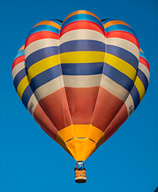

Resmi Ellipsel Kýrpma
Paragraf
.kab {color:magenta;} img { float: left; shape-outside: ellipse(50% 60%); /* ellipse(40% 50%) */ clip-path: ellipse(50% 60%);} /* ellipse(40% 50%) */
<div class="kab">  <div>1782 yýlýnýn kasým ayýnda bir gece, hikayemiz böyle baþlýyor, küçük bir Fransýz kasabasý olan Annonay'daki bir evde, beyaz bacasýndan gri dumanlarýn gökyüzüne kývrýlarak yükseldiði bir evde, kaðýt-imalatý ticaretiyle uðraþan bilimsel araþtýrmalar meraklýsý iki kardeþ: Stephan ve Joseph Montgolfier'lerin nice tarihi bir icat olacak olan balonla gökyüzü uçuþunu tasarladýklarý, binlerce kasaba halký tarafýndan henüz bilinmemekteydi. Bu icat geleceðin modern uçaklarýnýn ilk prototipini oluþturacaktýr.</div> </div>